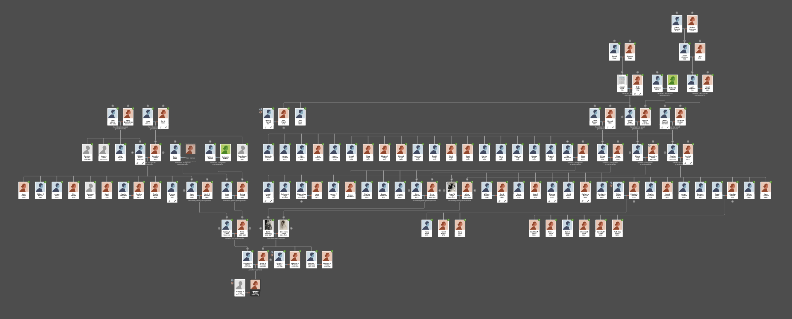

Describe how your culture and the people around you have influenced your values and identity...
I didn't understand what cultural identity was until I left the UK.
Having grown up under the influence of an amalgamated, objectively awful, British culture I don't consider myself particularly cultured in the same honourable sense that others might use the word - its embarrassing to claim I have a culture at all to be honest. Theres definitely an overall lack of cultural identity in the UK that is more pronounced in some of the mid sized cities like Cardiff where I grew up; where its not big enough to have a melting pot of culture like London, with lots of interaction between different people everyday, and not small enough to be grounded in your roots and know where you come from because the last 4 generations have lived in that village. As a whole, the UK tends to shy away from cultural identity and any connections to ancestry (likely because its so bloody shameful!) so I've always admired others who are so in touch with theirs.
I'm Welsh. It's almost been a non-event in my life up until recently. In the UK its not really a done thing to identify as Welsh, as declaring that fact to other Welsh people who are more in touch with their Welsh heritage will get you a belittling look when you can't converse in the mother tongue. And then to other Welsh people that are particularly bothered about their heritage it comes across as wanting to be different and doesn't go along with the idea that we should all just be British and deal with it. Then, outside of the UK, its just straight up shameful to be British! ...which is very understandable. There have been no real specifically Welsh cultural influences in my life and no real talk of it being a part of my identity - only other peoples.
My mum is the only real education I've had in my Welsh cultural identity, and thats a bit of a stretch - she has perfected the art of Welsh cakes... So I'm trying my best to learn all the specific nuances to be able to pass this on. She has also spent the last few years studying and building out our family tree which is an incredible feat! It turns out our whakapapa have pretty much resided exclusively in Cymru since the 1600s. That said, I shamefully don't speak Welsh, other than parroting the bi-lingual motorway signage, despite many teachers at school desperately trying to pound it in to my scattered teenage brain. This is something I am working on though!
Being privileged enough to live in Aotearoa for the last 5 years has allowed me to truly see and appreciate the importance of cultural identity, and this has spurred me on to learn more about my Welsh heritage and whakapapa because I think only in understanding where we come from and how we fit in the world can we acknowledge the impact we have on others. I suppose my lack of cultural identity has led me to study and appreciate it in other cultures and use it as a way to help shape my own values. Most specifically I've come to learn that community is the most important, so I'm very grateful for all the experiences I've had outside of the UK in my life and I'm even more grateful to be learning from you all and sharing this journey with you.
only in understanding where we come from and how we fit in the world can we acknowledge the impact we have on others.
...My biggest influences on my values and identity overall though have been my parents and the way in which they interact and treat people and their environment. Every person they meet gets respect, politeness and a genuine interest in their life and well-being, and thats something I try to emulate in all my interactions with others. They've also encouraged me to continually learn and in turn develop my values and identity, and generally strive to improve myself in the hope that I can better serve others.
Evaluate your limitations in terms of your learning and career development...
As I think exclusively in imagery and feelings - and also a LOT of it at one time - I often fail to communicate my thoughts and intention into spoken words effectively and this has caused me issues in the past, both at home and in work. I much prefer having to slow down to write and I feel my writing skills are a much better indicator of what I truly mean, more than what I say, so writing this blog will be a greater reflection of how I'm feeling than my resting grump face and mumbles! That said, it's all now making more sense to me as I've very recently been diagnosed with ADHD and ASD so I've now got some awesome tools to help me but it's all still pretty fresh so bear with me.
I'm still working on how best to develop my off-the-cuff spoken communication so I'm open to any help there at all! I think the bootcamp portion will be a great learning opportunity for me to work on that though, so provided I can start to think a bit slower I might be good.
With the way I think in images I often find it hard to grasp new words and foreign concepts unless they are accompanied with an illustration or if I'm unable to physically do the thing as I'm reading about it in a real life contextual situation. I'm not sure whether that will be a good or bad thing yet. I do try to create my own diagrams to help cement my learning and I'm always happy to share them if they'll also help someone else.
Identify your strengths and how they will help you on your learning journey...
The thing I think will benefit me most on this journey is resilience. Whether thats a product of my terrible working memory or the fact I can only think in images and not words, I'm not sure! - but it sure is helpful to be able to keep moving forward and not get held up on past experiences. I'm hoping that my resilience will keep me going throughout this course and that I can use it to live in the present every day and not get held up on bad days - of which I can image there will be a few!
Explain a situation where you have made an ethical decision. Discuss how you weighed up the values involved in that decision, the decision you made, and how you reflect on the decision now.
The only thing I can think of is the fact I don't really eat much meat at all, and when I do it's generally because I've been cooked for and didn't want to be a nuisance or be disrespectful! Not really eating meat has just been a slow decline over the last 10 years as a result of me attempting to be more consumer conscious and respectful of the environment. I'm well aware of the impact mass produced meat is having on the environment, and I'm also aware that I'm privileged enough to be able to pick and choose my dietary requirements so it felt like a sensible way to go. I wouldn't define myself as a vegetarian but I don't purchase meat of my own accord to consume myself.
“Our enormously productive economy demands that we make consumption our way of life, that we convert the buying and use of goods into rituals, that we seek our spiritual satisfaction and our ego satisfaction in consumption. We need things consumed, burned up, worn out, replaced and discarded at an ever-increasing rate.” - Victor LeBow
Economist Victor Lebow writing in The Journal of Retailing in 1955. He is considered to be responsible for designing the post-world war consumer economy.
I also try not to buy things I don't absolutely need as I learned a while back that in North America only 1% of everything that is ever made and sold is still in use 6 months later! I don't want to contribute to this linear economy but I do live in it with the privileges it offers so I am having an impact. For me its just about making the best decision you can in that moment. I try to look after everything I own in a way that means it will last a long time and doesn't end up in landfill, but also in the hopes it will set an example for others to do the same.
I'm never going to preach to how others should live their life as I know that being conscious of the impact you have on the environment is a privilege that not everyone has and as long as I'm doing my best to help others reach the level of opportunity I have as a result of my privilege, it will all fall into place eventually. The first step is acknowledging my own privilege by practicing gratitude for the opportunities I've had, and how the life I was born into has shaped me to make the decisions I make and why.
Share an example of when you were trying to work productively with others, but there was resistance or tension. Discuss strategies you tried at the time, how effective they were, and your reflections on what other strategies you would try now and why.
Working in a tech start up company was pretty contentious at times, especially with the lack of systems and processes in place meaning the only way to learn was through experience and working as a team. The support team I was a part of had pretty high access levels to a lot of admin privileges at the start which meant there was a lot of responsibility to get things right. When training a new team member I was sensing a lot of frustration from them that I wasn't letting them loose on all the tools straight away and this was communicated by them to our also newly appointed team lead. It was suggested that I let the new trainee go ahead and make mistakes so that they could learn. I wasn't particularly a fan of this idea as I knew the pitfalls and where they could and would go wrong should a particular situation arise so I mentioned this to the team lead and said I would do my best to help but I didn't think it was a great idea to remove the supervision just yet and asked that we could maybe get some more restriction on the things we had access to first. I wrote up some change requests for the product team, and knowing I had already documented some of these potential issues I had passed on everything I knew to the new team member and did as instructed by my new team lead. A week or so later the trainee ended up button bashing their way through some of the admin permissions and caused a serious data and security issue for one of our biggest clients...
As a result of this we did get our access permissions revised which was a good thing, and the new trainee learned a LOT! If I were to go back to this moment in time though I think I would maybe ask my team lead to sit down with me and the trainee and listen to the training I was giving them so they could also appreciate the nuances of the operation and how delicate everything was. I'd also maybe try and document more change requests for the product team to review as and when I noticed them so I wasn't continually writing prevention documents for the purpose of training new support team members.